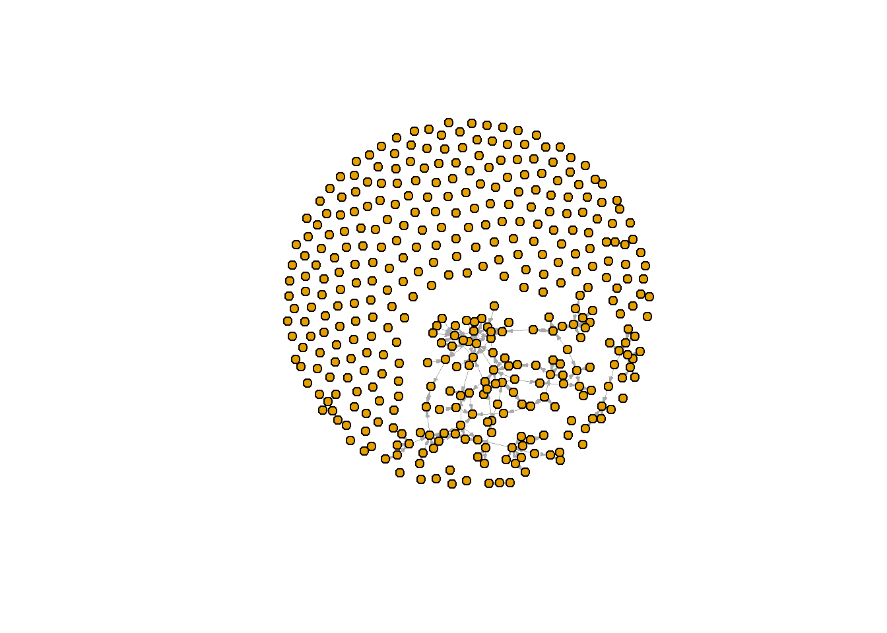

For now I put all the code in this one chunk, I can make it neat
later, but I spent a lot of time trial and erroring to get the grad
school stuff work. It does not work yet.
#vragen:
#hoe kan je bij het subsetten dingen selecteren die in [[1]] staan, zoals hieronder
#sociololist<-x$demographics$naam[x$demographics$[[1]]$discipline.24=="sociology"]
#wat doet die bracket in de definitie van het 'sociologists' object hieronder
#waarom komen mijn webpaginas niet consistent in het menu? vreselijk irritant!
fpackage.check <- function(packages) {
lapply(packages, FUN = function(x) {
if (!require(x, character.only = TRUE)) {
install.packages(x, dependencies = TRUE)
library(x, character.only = TRUE)
}
})
}
fsave <- function(x, file = NULL, location = "./data/processed/") {
ifelse(!dir.exists("data"), dir.create("data"), FALSE)
ifelse(!dir.exists("data/processed"), dir.create("data/processed"), FALSE)
if (is.null(file))
file = deparse(substitute(x))
datename <- substr(gsub("[:-]", "", Sys.time()), 1, 8)
totalname <- paste(location, file, "_", datename, ".rda", sep = "")
save(x, file = totalname) #need to fix if file is reloaded as input name, not as x.
}
fload <- function(filename) {
load(filename)
get(ls()[ls() != "filename"])
}
fshowdf <- function(x, ...) {
knitr::kable(x, digits = 2, "html", ...) %>%
kableExtra::kable_styling(bootstrap_options = c("striped", "hover")) %>%
kableExtra::scroll_box(width = "100%", height = "300px")
}
packages <- c("tidyverse", "scholar", "openalexR", "rvest", "jsonlite")
fpackage.check(packages)
## Loading required package: tidyverse
## ── Attaching core tidyverse packages ─────────────────
## ✔ dplyr 1.1.4 ✔ readr 2.1.5
## ✔ forcats 1.0.0 ✔ stringr 1.5.1
## ✔ ggplot2 3.5.2 ✔ tibble 3.3.0
## ✔ lubridate 1.9.4 ✔ tidyr 1.3.1
## ✔ purrr 1.1.0
## ── Conflicts ──────────────── tidyverse_conflicts() ──
## ✖ dplyr::filter() masks stats::filter()
## ✖ dplyr::lag() masks stats::lag()
## ℹ Use the conflicted package (<http://conflicted.r-lib.org/>) to force all conflicts to become errors
## Loading required package: scholar
##
## Loading required package: openalexR
##
## openalexR v2.0.0 introduces breaking changes.
## See NEWS.md for details.
##
## To suppress this message, add `openalexR.message = suppressed` to your .Renviron file.
##
## Loading required package: rvest
##
##
## Attaching package: 'rvest'
##
##
## The following object is masked from 'package:readr':
##
## guess_encoding
##
##
## Loading required package: jsonlite
##
##
## Attaching package: 'jsonlite'
##
##
## The following object is masked from 'package:purrr':
##
## flatten
## [[1]]
## NULL
##
## [[2]]
## NULL
##
## [[3]]
## NULL
##
## [[4]]
## NULL
##
## [[5]]
## NULL
setwd("C:/Users/Groot/Documents/RDirectory")
scholars <- fload("scholars_20240924.rda")
demographics <- do.call(rbind.data.frame, scholars$demographics)
demographics <- demographics %>%
mutate(Universiteit1.22 = replace(Universiteit1.22, is.na(Universiteit1.22), ""),
Universiteit2.22 = replace(Universiteit2.22, is.na(Universiteit2.22), ""),
Universiteit1.24 = replace(Universiteit1.24, is.na(Universiteit1.24), ""),
Universiteit2.24 = replace(Universiteit2.24, is.na(Universiteit2.24), ""),
discipline.22 = replace(discipline.22, is.na(discipline.22), ""),
discipline.24 = replace(discipline.24, is.na(discipline.24), ""))
sample <- which(demographics$discipline.22 == "sociology" | demographics$discipline.24 == "sociology")
demographics_soc <- demographics[sample, ]
sociologists <- lapply(scholars, "[", sample)
#we hebben de politicologen nu verwijderd, wat willen we allemaal selecteren?
#uit demographics: Naam, Universiteit1.22, Universiteit2.22, Universiteit1.24, Universiteit2.24,
#Functie.22, Functie.24, au_id
#uit scholars_oa: id, works_count, cited_by_count, counts_by_year?(dit zijn tabellen, beetje lastig)
#uit works: authors(sws want dat zijn de ties), topics(mss controle? sws meenemen want fascinerend)
#Scraping names of alumni from ICS website
require(rvest)
require(xml2)
## Loading required package: xml2
require(dplyr)
icsgrad<-read_html("https://ics-graduateschool.nl/alumni-projects/")
icsgrad<-icsgrad %>%
html_nodes("body") %>%
xml_find_all("//tbody") %>%
html_table()
icsgrad<-bind_rows(icsgrad)
icsnames<-as.list(icsgrad$X2)
dupname<-which(duplicated(icsnames))
icsnames<-icsnames[-dupname]
#Making the network from the scholars dataset
fcolnet <- function(data = scholars, discipline = "sociology", waves = list(c(2015,
2018), c(2019, 2023)), type = c("first")) {
# step 1
demographics <- do.call(rbind.data.frame, data$demographics)
demographics <- demographics %>%
mutate(Universiteit1.22 = replace(Universiteit1.22, is.na(Universiteit1.22), ""), Universiteit2.22 = replace(Universiteit2.22,
is.na(Universiteit2.22), ""), Universiteit1.24 = replace(Universiteit1.24, is.na(Universiteit1.24),
""), Universiteit2.24 = replace(Universiteit2.24, is.na(Universiteit2.24), ""), discipline.22 = replace(discipline.22,
is.na(discipline.22), ""), discipline.24 = replace(discipline.24, is.na(discipline.24), ""))
sample <- which(demographics$discipline.22 %in% discipline | demographics$discipline.24 %in% discipline)
demographics_soc <- demographics[sample, ]
scholars_sel <- lapply(scholars, "[", sample)
# step 2
ids <- demographics_soc$au_id
nwaves <- length(waves)
nets <- array(0, dim = c(nwaves, length(ids), length(ids)), dimnames = list(wave = 1:nwaves, ids,
ids))
dimnames(nets)
# step 3
df_works <- tibble(works_id = unlist(lapply(scholars_sel$work, function(l) l$id)), works_author = unlist(lapply(scholars_sel$work,
function(l) l$author), recursive = FALSE), works_year = unlist(lapply(scholars_sel$work, function(l) l$publication_year),
recursive = FALSE))
df_works <- df_works[!duplicated(df_works), ]
# step 4
if (type == "first") {
for (j in 1:nwaves) {
df_works_w <- df_works[df_works$works_year >= waves[[j]][1] & df_works$works_year <= waves[[j]][2],
]
for (i in 1:nrow(df_works_w)) {
ego <- df_works_w$works_author[i][[1]]$au_id[1]
alters <- df_works_w$works_author[i][[1]]$au_id[-1]
if (sum(ids %in% ego) > 0 & sum(ids %in% alters) > 0) {
nets[j, which(ids %in% ego), which(ids %in% alters)] <- 1
}
}
}
}
if (type == "last") {
for (j in 1:nwaves) {
df_works_w <- df_works[df_works$works_year >= waves[[j]][1] & df_works$works_year <= waves[[j]][2],
]
for (i in 1:nrow(df_works_w)) {
ego <- rev(df_works_w$works_author[i][[1]]$au_id)[1]
alters <- rev(df_works_w$works_author[i][[1]]$au_id)[-1]
if (sum(ids %in% ego) > 0 & sum(ids %in% alters) > 0) {
nets[j, which(ids %in% ego), which(ids %in% alters)] <- 1
}
}
}
}
if (type == "all") {
for (j in 1:nwaves) {
df_works_w <- df_works[df_works$works_year >= waves[[j]][1] & df_works$works_year <= waves[[j]][2],
]
for (i in 1:nrow(df_works_w)) {
egos <- df_works_w$works_author[i][[1]]$au_id
if (sum(ids %in% egos) > 0) {
nets[j, which(ids %in% egos), which(ids %in% egos)] <- 1
}
}
}
}
output <- list()
output$data <- scholars_sel
output$nets <- nets
return(output)
}
#see if it works
test <- fcolnet(data = scholars,
discipline = "sociology",
waves = list(c(2015, 2018), c(2019, 2023)),
type = c("first"))
test_w1 <- igraph::graph_from_adjacency_matrix(
test$nets[1,,], #for this example I take the first wave of data. (thus I select the array of networks and take the first matrix)
mode = c("directed"),
weighted = NULL,
diag = FALSE,
add.colnames = NULL,
add.rownames = NULL
)
## Warning: Same attribute for columns and rows, row names are
## ignored
plot(test_w1,
vertex.label = NA,
vertex.size = 5,
edge.width = 0.2,
edge.arrow.size =0.2)

#now to add the grad school affiliations, starting with ics
ics<-as.data.frame(icsgrad$X2)
ics<-ics[-c(1), ]
ics$ics<-1
## Warning in ics$ics <- 1: Coercing LHS to a list
names(ics)<-c("Naam","ICS")
icsmatch<-
demographics_soc<-merge(demographics_soc, ics, all=TRUE, by="Naam")
LS0tDQp0aXRsZTogIk5ldHdvcms6IGZpcnN0IGF0dGVtcHQiDQphdXRob3I6ICJUamV1IEdyb290aHVpanNlbiINCmRhdGU6ICIyMDI1LTA5LTI2Ig0Kb3V0cHV0OiBodG1sX2RvY3VtZW50DQotLS0NCg0KYGBge3Igc2V0dXAsIGluY2x1ZGU9RkFMU0V9DQprbml0cjo6b3B0c19jaHVuayRzZXQoZWNobyA9IFRSVUUpDQpgYGANCg0KRm9yIG5vdyBJIHB1dCBhbGwgdGhlIGNvZGUgaW4gdGhpcyBvbmUgY2h1bmssIEkgY2FuIG1ha2UgaXQgbmVhdCBsYXRlciwgYnV0IEkgc3BlbnQgYSBsb3Qgb2YgdGltZSB0cmlhbCBhbmQgZXJyb3JpbmcgDQp0byBnZXQgdGhlIGdyYWQgc2Nob29sIHN0dWZmIHdvcmsuIEl0IGRvZXMgbm90IHdvcmsgeWV0Lg0KDQpgYGB7cn0NCiN2cmFnZW46DQojaG9lIGthbiBqZSBiaWogaGV0IHN1YnNldHRlbiBkaW5nZW4gc2VsZWN0ZXJlbiBkaWUgaW4gW1sxXV0gc3RhYW4sIHpvYWxzIGhpZXJvbmRlcg0KI3NvY2lvbG9saXN0PC14JGRlbW9ncmFwaGljcyRuYWFtW3gkZGVtb2dyYXBoaWNzJFtbMV1dJGRpc2NpcGxpbmUuMjQ9PSJzb2Npb2xvZ3kiXQ0KI3dhdCBkb2V0IGRpZSBicmFja2V0IGluIGRlIGRlZmluaXRpZSB2YW4gaGV0ICdzb2Npb2xvZ2lzdHMnIG9iamVjdCBoaWVyb25kZXINCiN3YWFyb20ga29tZW4gbWlqbiB3ZWJwYWdpbmFzIG5pZXQgY29uc2lzdGVudCBpbiBoZXQgbWVudT8gdnJlc2VsaWprIGlycml0YW50IQ0KDQpmcGFja2FnZS5jaGVjayA8LSBmdW5jdGlvbihwYWNrYWdlcykgew0KICBsYXBwbHkocGFja2FnZXMsIEZVTiA9IGZ1bmN0aW9uKHgpIHsNCiAgICBpZiAoIXJlcXVpcmUoeCwgY2hhcmFjdGVyLm9ubHkgPSBUUlVFKSkgew0KICAgICAgaW5zdGFsbC5wYWNrYWdlcyh4LCBkZXBlbmRlbmNpZXMgPSBUUlVFKQ0KICAgICAgbGlicmFyeSh4LCBjaGFyYWN0ZXIub25seSA9IFRSVUUpDQogICAgfQ0KICB9KQ0KfQ0KDQpmc2F2ZSA8LSBmdW5jdGlvbih4LCBmaWxlID0gTlVMTCwgbG9jYXRpb24gPSAiLi9kYXRhL3Byb2Nlc3NlZC8iKSB7DQogIGlmZWxzZSghZGlyLmV4aXN0cygiZGF0YSIpLCBkaXIuY3JlYXRlKCJkYXRhIiksIEZBTFNFKQ0KICBpZmVsc2UoIWRpci5leGlzdHMoImRhdGEvcHJvY2Vzc2VkIiksIGRpci5jcmVhdGUoImRhdGEvcHJvY2Vzc2VkIiksIEZBTFNFKQ0KICBpZiAoaXMubnVsbChmaWxlKSkNCiAgICBmaWxlID0gZGVwYXJzZShzdWJzdGl0dXRlKHgpKQ0KICBkYXRlbmFtZSA8LSBzdWJzdHIoZ3N1YigiWzotXSIsICIiLCBTeXMudGltZSgpKSwgMSwgOCkNCiAgdG90YWxuYW1lIDwtIHBhc3RlKGxvY2F0aW9uLCBmaWxlLCAiXyIsIGRhdGVuYW1lLCAiLnJkYSIsIHNlcCA9ICIiKQ0KICBzYXZlKHgsIGZpbGUgPSB0b3RhbG5hbWUpICAjbmVlZCB0byBmaXggaWYgZmlsZSBpcyByZWxvYWRlZCBhcyBpbnB1dCBuYW1lLCBub3QgYXMgeC4gDQp9DQoNCmZsb2FkIDwtIGZ1bmN0aW9uKGZpbGVuYW1lKSB7DQogIGxvYWQoZmlsZW5hbWUpDQogIGdldChscygpW2xzKCkgIT0gImZpbGVuYW1lIl0pDQp9DQoNCmZzaG93ZGYgPC0gZnVuY3Rpb24oeCwgLi4uKSB7DQogIGtuaXRyOjprYWJsZSh4LCBkaWdpdHMgPSAyLCAiaHRtbCIsIC4uLikgJT4lDQogICAga2FibGVFeHRyYTo6a2FibGVfc3R5bGluZyhib290c3RyYXBfb3B0aW9ucyA9IGMoInN0cmlwZWQiLCAiaG92ZXIiKSkgJT4lDQogICAga2FibGVFeHRyYTo6c2Nyb2xsX2JveCh3aWR0aCA9ICIxMDAlIiwgaGVpZ2h0ID0gIjMwMHB4IikNCn0NCg0KcGFja2FnZXMgPC0gYygidGlkeXZlcnNlIiwgInNjaG9sYXIiLCAib3BlbmFsZXhSIiwgInJ2ZXN0IiwgImpzb25saXRlIikNCmZwYWNrYWdlLmNoZWNrKHBhY2thZ2VzKQ0KDQpzZXR3ZCgiQzovVXNlcnMvR3Jvb3QvRG9jdW1lbnRzL1JEaXJlY3RvcnkiKQ0Kc2Nob2xhcnMgPC0gZmxvYWQoInNjaG9sYXJzXzIwMjQwOTI0LnJkYSIpDQoNCmRlbW9ncmFwaGljcyA8LSBkby5jYWxsKHJiaW5kLmRhdGEuZnJhbWUsIHNjaG9sYXJzJGRlbW9ncmFwaGljcykNCmRlbW9ncmFwaGljcyA8LSBkZW1vZ3JhcGhpY3MgJT4lDQogIG11dGF0ZShVbml2ZXJzaXRlaXQxLjIyID0gcmVwbGFjZShVbml2ZXJzaXRlaXQxLjIyLCBpcy5uYShVbml2ZXJzaXRlaXQxLjIyKSwgIiIpLA0KICAgICAgICAgVW5pdmVyc2l0ZWl0Mi4yMiA9IHJlcGxhY2UoVW5pdmVyc2l0ZWl0Mi4yMiwgaXMubmEoVW5pdmVyc2l0ZWl0Mi4yMiksICIiKSwgDQogICAgICAgICBVbml2ZXJzaXRlaXQxLjI0ID0gcmVwbGFjZShVbml2ZXJzaXRlaXQxLjI0LCBpcy5uYShVbml2ZXJzaXRlaXQxLjI0KSwgIiIpLCANCiAgICAgICAgIFVuaXZlcnNpdGVpdDIuMjQgPSByZXBsYWNlKFVuaXZlcnNpdGVpdDIuMjQsIGlzLm5hKFVuaXZlcnNpdGVpdDIuMjQpLCAiIiksIA0KICAgICAgICAgZGlzY2lwbGluZS4yMiA9IHJlcGxhY2UoZGlzY2lwbGluZS4yMiwgaXMubmEoZGlzY2lwbGluZS4yMiksICIiKSwgDQogICAgICAgICBkaXNjaXBsaW5lLjI0ID0gcmVwbGFjZShkaXNjaXBsaW5lLjI0LCBpcy5uYShkaXNjaXBsaW5lLjI0KSwgIiIpKQ0KDQpzYW1wbGUgPC0gd2hpY2goZGVtb2dyYXBoaWNzJGRpc2NpcGxpbmUuMjIgPT0gInNvY2lvbG9neSIgfCBkZW1vZ3JhcGhpY3MkZGlzY2lwbGluZS4yNCA9PSAic29jaW9sb2d5IikNCg0KZGVtb2dyYXBoaWNzX3NvYyA8LSBkZW1vZ3JhcGhpY3Nbc2FtcGxlLCBdDQpzb2Npb2xvZ2lzdHMgPC0gbGFwcGx5KHNjaG9sYXJzLCAiWyIsIHNhbXBsZSkNCg0KI3dlIGhlYmJlbiBkZSBwb2xpdGljb2xvZ2VuIG51IHZlcndpamRlcmQsIHdhdCB3aWxsZW4gd2UgYWxsZW1hYWwgc2VsZWN0ZXJlbj8NCiN1aXQgZGVtb2dyYXBoaWNzOiBOYWFtLCBVbml2ZXJzaXRlaXQxLjIyLCBVbml2ZXJzaXRlaXQyLjIyLCBVbml2ZXJzaXRlaXQxLjI0LCBVbml2ZXJzaXRlaXQyLjI0LCANCiAgICAgICAgICAgICAgICAgICAgI0Z1bmN0aWUuMjIsIEZ1bmN0aWUuMjQsIGF1X2lkDQojdWl0IHNjaG9sYXJzX29hOiBpZCwgd29ya3NfY291bnQsIGNpdGVkX2J5X2NvdW50LCBjb3VudHNfYnlfeWVhcj8oZGl0IHppam4gdGFiZWxsZW4sIGJlZXRqZSBsYXN0aWcpDQojdWl0IHdvcmtzOiBhdXRob3JzKHN3cyB3YW50IGRhdCB6aWpuIGRlIHRpZXMpLCB0b3BpY3MobXNzIGNvbnRyb2xlPyBzd3MgbWVlbmVtZW4gd2FudCBmYXNjaW5lcmVuZCkNCg0KI1NjcmFwaW5nIG5hbWVzIG9mIGFsdW1uaSBmcm9tIElDUyB3ZWJzaXRlDQpyZXF1aXJlKHJ2ZXN0KQ0KcmVxdWlyZSh4bWwyKQ0KcmVxdWlyZShkcGx5cikNCg0KaWNzZ3JhZDwtcmVhZF9odG1sKCJodHRwczovL2ljcy1ncmFkdWF0ZXNjaG9vbC5ubC9hbHVtbmktcHJvamVjdHMvIikNCmljc2dyYWQ8LWljc2dyYWQgJT4lDQogIGh0bWxfbm9kZXMoImJvZHkiKSAlPiUNCiAgeG1sX2ZpbmRfYWxsKCIvL3Rib2R5IikgJT4lDQogIGh0bWxfdGFibGUoKQ0KaWNzZ3JhZDwtYmluZF9yb3dzKGljc2dyYWQpDQppY3NuYW1lczwtYXMubGlzdChpY3NncmFkJFgyKQ0KZHVwbmFtZTwtd2hpY2goZHVwbGljYXRlZChpY3NuYW1lcykpDQppY3NuYW1lczwtaWNzbmFtZXNbLWR1cG5hbWVdDQoNCiNNYWtpbmcgdGhlIG5ldHdvcmsgZnJvbSB0aGUgc2Nob2xhcnMgZGF0YXNldA0KDQpmY29sbmV0IDwtIGZ1bmN0aW9uKGRhdGEgPSBzY2hvbGFycywgZGlzY2lwbGluZSA9ICJzb2Npb2xvZ3kiLCB3YXZlcyA9IGxpc3QoYygyMDE1LA0KICAgICAgICAgICAgICAgICAgICAgICAgICAgICAgICAgICAgICAgICAgICAgICAgICAgICAgICAgICAgICAgICAgICAgICAgICAgICAgICAgICAgICAgICAgICAgICAgIDIwMTgpLCBjKDIwMTksIDIwMjMpKSwgdHlwZSA9IGMoImZpcnN0IikpIHsNCiAgDQogICMgc3RlcCAxDQogIGRlbW9ncmFwaGljcyA8LSBkby5jYWxsKHJiaW5kLmRhdGEuZnJhbWUsIGRhdGEkZGVtb2dyYXBoaWNzKQ0KICBkZW1vZ3JhcGhpY3MgPC0gZGVtb2dyYXBoaWNzICU+JQ0KICAgIG11dGF0ZShVbml2ZXJzaXRlaXQxLjIyID0gcmVwbGFjZShVbml2ZXJzaXRlaXQxLjIyLCBpcy5uYShVbml2ZXJzaXRlaXQxLjIyKSwgIiIpLCBVbml2ZXJzaXRlaXQyLjIyID0gcmVwbGFjZShVbml2ZXJzaXRlaXQyLjIyLA0KICAgICAgICAgICAgICAgICAgICAgICAgICAgICAgICAgICAgICAgICAgICAgICAgICAgICAgICAgICAgICAgICAgICAgICAgICAgICAgICAgICAgICAgICAgICAgICAgICAgICAgICAgICAgICAgICBpcy5uYShVbml2ZXJzaXRlaXQyLjIyKSwgIiIpLCBVbml2ZXJzaXRlaXQxLjI0ID0gcmVwbGFjZShVbml2ZXJzaXRlaXQxLjI0LCBpcy5uYShVbml2ZXJzaXRlaXQxLjI0KSwNCiAgICAgICAgICAgICAgICAgICAgICAgICAgICAgICAgICAgICAgICAgICAgICAgICAgICAgICAgICAgICAgICAgICAgICAgICAgICAgICAgICAgICAgICAgICAgICAgICAgICAgICAgICAgICAgICAgICAgICAgICAgICAgICAgICAgICAgICAgICAgICAgICAgICAgICAgICAgICAgICAgICAgICAgICAgIiIpLCBVbml2ZXJzaXRlaXQyLjI0ID0gcmVwbGFjZShVbml2ZXJzaXRlaXQyLjI0LCBpcy5uYShVbml2ZXJzaXRlaXQyLjI0KSwgIiIpLCBkaXNjaXBsaW5lLjIyID0gcmVwbGFjZShkaXNjaXBsaW5lLjIyLA0KICAgICAgICAgICAgICAgICAgICAgICAgICAgICAgICAgICAgICAgICAgICAgICAgICAgICAgICAgICAgICAgICAgICAgICAgICAgICAgICAgICAgICAgICAgICAgICAgICAgICAgICAgICAgICAgICAgICAgICAgICAgICAgICAgICAgICAgICAgICAgICAgICAgICAgICAgICAgICAgICAgICAgICAgICAgICAgICAgICAgICAgICAgICAgICAgICAgICAgICAgICAgICAgICAgICAgICAgICAgICAgICAgICAgICAgICAgICAgICAgICAgICAgICAgICAgICAgICAgICAgICAgICAgICAgICAgIGlzLm5hKGRpc2NpcGxpbmUuMjIpLCAiIiksIGRpc2NpcGxpbmUuMjQgPSByZXBsYWNlKGRpc2NpcGxpbmUuMjQsIGlzLm5hKGRpc2NpcGxpbmUuMjQpLCAiIikpDQogIA0KICBzYW1wbGUgPC0gd2hpY2goZGVtb2dyYXBoaWNzJGRpc2NpcGxpbmUuMjIgJWluJSBkaXNjaXBsaW5lIHwgZGVtb2dyYXBoaWNzJGRpc2NpcGxpbmUuMjQgJWluJSBkaXNjaXBsaW5lKQ0KICANCiAgZGVtb2dyYXBoaWNzX3NvYyA8LSBkZW1vZ3JhcGhpY3Nbc2FtcGxlLCBdDQogIHNjaG9sYXJzX3NlbCA8LSBsYXBwbHkoc2Nob2xhcnMsICJbIiwgc2FtcGxlKQ0KICANCiAgIyBzdGVwIDINCiAgaWRzIDwtIGRlbW9ncmFwaGljc19zb2MkYXVfaWQNCiAgbndhdmVzIDwtIGxlbmd0aCh3YXZlcykNCiAgbmV0cyA8LSBhcnJheSgwLCBkaW0gPSBjKG53YXZlcywgbGVuZ3RoKGlkcyksIGxlbmd0aChpZHMpKSwgZGltbmFtZXMgPSBsaXN0KHdhdmUgPSAxOm53YXZlcywgaWRzLA0KICAgICAgICAgICAgICAgICAgICAgICAgICAgICAgICAgICAgICAgICAgICAgICAgICAgICAgICAgICAgICAgICAgICAgICAgICAgICAgaWRzKSkNCiAgZGltbmFtZXMobmV0cykNCiAgDQogICMgc3RlcCAzDQogIGRmX3dvcmtzIDwtIHRpYmJsZSh3b3Jrc19pZCA9IHVubGlzdChsYXBwbHkoc2Nob2xhcnNfc2VsJHdvcmssIGZ1bmN0aW9uKGwpIGwkaWQpKSwgd29ya3NfYXV0aG9yID0gdW5saXN0KGxhcHBseShzY2hvbGFyc19zZWwkd29yaywNCiAgICAgICAgICAgICAgICAgICAgICAgICAgICAgICAgICAgICAgICAgICAgICAgICAgICAgICAgICAgICAgICAgICAgICAgICAgICAgICAgICAgICAgICAgICAgICAgICAgICAgICAgICAgICAgICAgIGZ1bmN0aW9uKGwpIGwkYXV0aG9yKSwgcmVjdXJzaXZlID0gRkFMU0UpLCB3b3Jrc195ZWFyID0gdW5saXN0KGxhcHBseShzY2hvbGFyc19zZWwkd29yaywgZnVuY3Rpb24obCkgbCRwdWJsaWNhdGlvbl95ZWFyKSwNCiAgICAgICAgICAgICAgICAgICAgICAgICAgICAgICAgICAgICAgICAgICAgICAgICAgICAgICAgICAgICAgICAgICAgICAgICAgICAgICAgICAgICAgICAgICAgICAgICAgICAgICAgICAgICAgICAgICAgICAgICAgICAgICAgICAgICAgICAgICAgICAgICAgICAgICAgICAgICAgICAgICAgICAgICAgICAgICAgIHJlY3Vyc2l2ZSA9IEZBTFNFKSkNCiAgDQogIGRmX3dvcmtzIDwtIGRmX3dvcmtzWyFkdXBsaWNhdGVkKGRmX3dvcmtzKSwgXQ0KICANCiAgIyBzdGVwIDQNCiAgaWYgKHR5cGUgPT0gImZpcnN0Iikgew0KICAgIGZvciAoaiBpbiAxOm53YXZlcykgew0KICAgICAgZGZfd29ya3NfdyA8LSBkZl93b3Jrc1tkZl93b3JrcyR3b3Jrc195ZWFyID49IHdhdmVzW1tqXV1bMV0gJiBkZl93b3JrcyR3b3Jrc195ZWFyIDw9IHdhdmVzW1tqXV1bMl0sDQogICAgICBdDQogICAgICBmb3IgKGkgaW4gMTpucm93KGRmX3dvcmtzX3cpKSB7DQogICAgICAgIGVnbyA8LSBkZl93b3Jrc193JHdvcmtzX2F1dGhvcltpXVtbMV1dJGF1X2lkWzFdDQogICAgICAgIGFsdGVycyA8LSBkZl93b3Jrc193JHdvcmtzX2F1dGhvcltpXVtbMV1dJGF1X2lkWy0xXQ0KICAgICAgICBpZiAoc3VtKGlkcyAlaW4lIGVnbykgPiAwICYgc3VtKGlkcyAlaW4lIGFsdGVycykgPiAwKSB7DQogICAgICAgICAgbmV0c1tqLCB3aGljaChpZHMgJWluJSBlZ28pLCB3aGljaChpZHMgJWluJSBhbHRlcnMpXSA8LSAxDQogICAgICAgIH0NCiAgICAgIH0NCiAgICB9DQogIH0NCiAgDQogIGlmICh0eXBlID09ICJsYXN0Iikgew0KICAgIGZvciAoaiBpbiAxOm53YXZlcykgew0KICAgICAgZGZfd29ya3NfdyA8LSBkZl93b3Jrc1tkZl93b3JrcyR3b3Jrc195ZWFyID49IHdhdmVzW1tqXV1bMV0gJiBkZl93b3JrcyR3b3Jrc195ZWFyIDw9IHdhdmVzW1tqXV1bMl0sDQogICAgICBdDQogICAgICBmb3IgKGkgaW4gMTpucm93KGRmX3dvcmtzX3cpKSB7DQogICAgICAgIGVnbyA8LSByZXYoZGZfd29ya3NfdyR3b3Jrc19hdXRob3JbaV1bWzFdXSRhdV9pZClbMV0NCiAgICAgICAgYWx0ZXJzIDwtIHJldihkZl93b3Jrc193JHdvcmtzX2F1dGhvcltpXVtbMV1dJGF1X2lkKVstMV0NCiAgICAgICAgaWYgKHN1bShpZHMgJWluJSBlZ28pID4gMCAmIHN1bShpZHMgJWluJSBhbHRlcnMpID4gMCkgew0KICAgICAgICAgIG5ldHNbaiwgd2hpY2goaWRzICVpbiUgZWdvKSwgd2hpY2goaWRzICVpbiUgYWx0ZXJzKV0gPC0gMQ0KICAgICAgICB9DQogICAgICB9DQogICAgfQ0KICB9DQogIA0KICBpZiAodHlwZSA9PSAiYWxsIikgew0KICAgIGZvciAoaiBpbiAxOm53YXZlcykgew0KICAgICAgZGZfd29ya3NfdyA8LSBkZl93b3Jrc1tkZl93b3JrcyR3b3Jrc195ZWFyID49IHdhdmVzW1tqXV1bMV0gJiBkZl93b3JrcyR3b3Jrc195ZWFyIDw9IHdhdmVzW1tqXV1bMl0sDQogICAgICBdDQogICAgICBmb3IgKGkgaW4gMTpucm93KGRmX3dvcmtzX3cpKSB7DQogICAgICAgIGVnb3MgPC0gZGZfd29ya3NfdyR3b3Jrc19hdXRob3JbaV1bWzFdXSRhdV9pZA0KICAgICAgICBpZiAoc3VtKGlkcyAlaW4lIGVnb3MpID4gMCkgew0KICAgICAgICAgIG5ldHNbaiwgd2hpY2goaWRzICVpbiUgZWdvcyksIHdoaWNoKGlkcyAlaW4lIGVnb3MpXSA8LSAxDQogICAgICAgIH0NCiAgICAgIH0NCiAgICB9DQogIH0NCiAgb3V0cHV0IDwtIGxpc3QoKQ0KICBvdXRwdXQkZGF0YSA8LSBzY2hvbGFyc19zZWwNCiAgb3V0cHV0JG5ldHMgPC0gbmV0cw0KICByZXR1cm4ob3V0cHV0KQ0KfQ0KDQojc2VlIGlmIGl0IHdvcmtzDQp0ZXN0IDwtIGZjb2xuZXQoZGF0YSA9IHNjaG9sYXJzLCANCiAgICAgICAgICAgICAgICBkaXNjaXBsaW5lID0gInNvY2lvbG9neSIsIA0KICAgICAgICAgICAgICAgIHdhdmVzID0gbGlzdChjKDIwMTUsIDIwMTgpLCBjKDIwMTksIDIwMjMpKSwgDQogICAgICAgICAgICAgICAgdHlwZSA9IGMoImZpcnN0IikpDQoNCnRlc3RfdzEgPC0gaWdyYXBoOjpncmFwaF9mcm9tX2FkamFjZW5jeV9tYXRyaXgoDQogIHRlc3QkbmV0c1sxLCxdLCAjZm9yIHRoaXMgZXhhbXBsZSBJIHRha2UgdGhlIGZpcnN0IHdhdmUgb2YgZGF0YS4gKHRodXMgSSBzZWxlY3QgdGhlIGFycmF5IG9mIG5ldHdvcmtzIGFuZCB0YWtlIHRoZSBmaXJzdCBtYXRyaXgpDQogIG1vZGUgPSBjKCJkaXJlY3RlZCIpLA0KICB3ZWlnaHRlZCA9IE5VTEwsDQogIGRpYWcgPSBGQUxTRSwNCiAgYWRkLmNvbG5hbWVzID0gTlVMTCwNCiAgYWRkLnJvd25hbWVzID0gTlVMTA0KKQ0KDQpwbG90KHRlc3RfdzEsDQogICAgIHZlcnRleC5sYWJlbCA9IE5BLA0KICAgICB2ZXJ0ZXguc2l6ZSA9IDUsDQogICAgIGVkZ2Uud2lkdGggPSAwLjIsDQogICAgIGVkZ2UuYXJyb3cuc2l6ZSA9MC4yKQ0KDQojbm93IHRvIGFkZCB0aGUgZ3JhZCBzY2hvb2wgYWZmaWxpYXRpb25zLCBzdGFydGluZyB3aXRoIGljcw0KaWNzPC1hcy5kYXRhLmZyYW1lKGljc2dyYWQkWDIpDQppY3M8LWljc1stYygxKSwgXQ0KaWNzJGljczwtMQ0KbmFtZXMoaWNzKTwtYygiTmFhbSIsIklDUyIpDQppY3NtYXRjaDwtDQpkZW1vZ3JhcGhpY3Nfc29jPC1tZXJnZShkZW1vZ3JhcGhpY3Nfc29jLCBpY3MsIGFsbD1UUlVFLCBieT0iTmFhbSIpDQoNCg0KYGBg